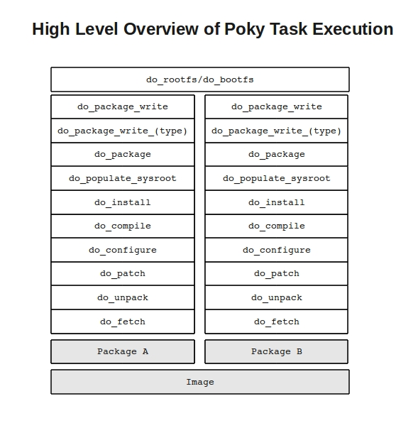
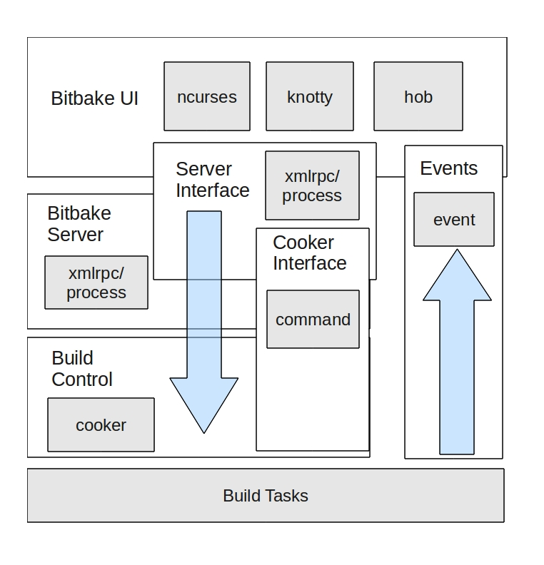

The Architecture of Open Source Applications, Volume 2 Amy Brown and Greg Wilson (eds.)
|
|
The Architecture of Open Source Applications, Volume 2 Amy Brown and Greg Wilson (eds.) |
The Yocto Project™ is an open source collaborative project that provides a common starting point for developers of embedded Linux systems to create customized distributions for embedded products in a hardware agnostic setting. Sponsored by the Linux Foundation™, Yocto is more than a build system. It provides tools, processes, templates and methods for developers to rapidly create and deploy products for the embedded market. One of the core components of Yocto, is the Poky Build system. As Poky is a large and complex system, we will be focusing on one of it's core components, BitBake. BitBake is a Gentoo Portage inspired build tool, used by both the Yocto Project and OpenEmbedded communities to utilize metadata in order to create Linux images from source.
In 2001, Sharp Corporation introduced the SL-5000 PDA, named Zaurus, which ran an embedded Linux distribution, Lineo. Not long after the Zaurus's introduction, Chris Larson founded the OpenZaurus Project, a replacement Linux distribution for the SharpROM, based on a build system called buildroot. With the founding of the project, people began contributing many more software packages, as well as targets for other devices, and it wasn't long that the build system for OpenZaurus began to show fragility. In January 2003, the community began discussing a new build system to incorporate the community usage model of a generic build system for embedded Linux distributions. This would eventually become OpenEmbedded. Chris Larson, Michael Lauer, and Holger Schurig began work on OpenEmbedded by porting hundreds of OpenZaurus packages over to the new build system.
The Yocto Project springs from this work. At the project's core is the Poky build system, created by Richard Purdie. It began as a stabilized branch of OpenEmbedded using a core subset of the thousands of OpenEmbedded recipes, across a limited set of architectures. Over time, it slowly coalesced into more than just an embedded build system, but into a complete software development platform, with an Eclipse plugin, a fakeroot replacement and QEMU based images. Around November 2010, the Linux Foundation announced that this work would all continue under the heading of the Yocto Project as a Linux Foundation sponsored project. It was then established that Yocto and OpenEmbedded would coordinate on a core set of package metadata called OE-Core combining the best of both Poky and OpenEmbedded with an increased use of layering for additional components.
The
Poky build system is the core of the Yocto Project. In Poky's
default configuration, it can
provide a starting image footprint that ranges from a shell
accessible minimal image all the way up to a Linux Standard
Base compliant image with a GNOME Mobile and Embedded (GMAE) based
reference user interface called Sato. From these base image types,
metadata layers can be added to extend functionality; layers can
provide an additional software stack for an image type, add a board
support package (BSP) for additional hardware or even represent a new
image type.
One of the most powerful aspects of the Poky build system is that every aspect of a build is controlled by metadata. Metadata can be loosely grouped into configuration files or package recipes. A recipe is a collection of non-executable metadata used by BitBake to set variables or define additional build time tasks. A recipe contains fields such as the recipe description, the recipe version, the license of the package and the upstream source repository are set. It may also indicate that the build process utilizes autotools, make, distutils or any other build process, in which case, the basic functionality can be defined by classes it inherits from the OE-Core layers class definitions in ./meta/classes. Additional tasks can also be defined, as well as task prerequisites. BitBake also supports both _prepend and _append as a method of extending task functionality by injecting code indicated by using prepend or append suffix into the beginning or end of a task.
DESCRIPTION = "GNU grep utility"
HOMEPAGE = "http://savannah.gnu.org/projects/grep/"
BUGTRACKER = "http://savannah.gnu.org/bugs/?group=grep"
SECTION = "console/utils"
LICENSE = "GPLv3"
LIC_FILES_CHKSUM = "file://COPYING;md5=8006d9c814277c1bfc4ca22af94b59ee"
PR = "r0"
SRC_URI = "${GNU_MIRROR}/grep/grep-${PV}.tar.gz"
SRC_URI[md5sum] = "03e3451a38b0d615cb113cbeaf252dc0"
SRC_URI[sha256sum] = "e9118eac72ecc71191725a7566361ab7643edfd3364869a47b78dc934a357970"
inherit autotools gettext
EXTRA_OECONF = "--disable-perl-regexp"
do_configure_prepend () {
rm -f ${S}/m4/init.m4
}
do_install () {
autotools_do_install
install -d ${D}${base_bindir}
mv ${D}${bindir}/grep ${D}${base_bindir}/grep.${PN}
mv ${D}${bindir}/egrep ${D}${base_bindir}/egrep.${PN}
mv ${D}${bindir}/fgrep ${D}${base_bindir}/fgrep.${PN}
}
pkg_postinst_${PN} () {
update-alternatives --install ${base_bindir}/grep grep grep.${PN} 100
update-alternatives --install ${base_bindir}/egrep egrep egrep.${PN} 100
update-alternatives --install ${base_bindir}/fgrep fgrep fgrep.${PN} 100
}
pkg_prerm_${PN} () {
update-alternatives --remove grep grep.${PN}
update-alternatives --remove egrep egrep.${PN}
update-alternatives --remove fgrep fgrep.${PN}
}
Figure 7: Contents of the BitBake recipe for grep
Configuration files can be broken down into two types. Those that configure BitBake and the overall build run, and those that configure the various layers Poky uses to create different configurations of a target image. A layer is any grouping of metadata that provides some sort of additional functionality. These can be BSP for new devices, additional image types or additional software outside of the core layers. In fact, the core Yocto metadata, meta-yocto, is itself a layer applied on top of the OE-Core metadata layer, meta which adds additional software and image types to the OE-Core layer.
An example of how one would use layering is by creating a NAS device for the Intel n660 (Crownbay), utilizing x32, the new 32-bit native ABI for x86-64, with a custom software layer that adds a user interface.
Given the task at hand, we could split this functionality out into layers. At the lowest level we would utilize a BSP layer for Crownbay that would enable Crownbay-specific hardware functionality, such as video drivers. As we want x32, we would use the experimental meta-x32 layer. The NAS functionality would be layered on top of this by adding the Yocto Project's example NAS layer, meta-baryon. And lastly, we'll use an imaginary layer called meta-myproject, to provide the software and configuration to create a graphical user interface to enable configuration of the NAS.

Figure 2.0: Example of BitBake layering
During the setup of the BitBake environment, by sourcing oe-build-init-env, some initial configuration files are generated. These configuration files allow us quite a bit of control over how and what Poky generates. The first of these configuration files is bblayers.conf. This file is what we will use to add additional layers in order to build our example project.
# LAYER_CONF_VERSION is
increased each time build/conf/bblayers.conf
# changes
incompatibly
LCONF_VERSION = "4"
BBFILES ?= ""
BBLAYERS = " \
/home/eflanagan/poky/meta \
/home/eflanagan/poky/meta-yocto \
/home/eflanagan/poky/meta-intel/crownbay \
/home/eflanagan/poky/meta-x32 \
/home/eflanagan/poky/meta-baryon
\
/home/eflanagan/poky/meta-myproject \
"
Figure 3.0: example bblayers.conf
The BitBake layers file, bblayers, defines a variable,
BBLAYERS that BitBake uses to look for BitBake layers. In order to
fully understand this, we should also look at how our layers are
actually constructed. Using meta-baryon (from
git://git.yoctoproject.org/meta-baryon)
as our example layer, we want to examine the layer configuration
file. This file, conf/layer.conf, is what BitBake parses after it's
initial parsing of bblayers.conf. From here it adds additional
recipes, classes and configuration to the build.
# Layer configuration for meta-baryon layer# Copyright 2011 Intel Corporation# We have a conf directory, prepend to BBPATH to prefer our versionsBBPATH := "${LAYERDIR}:${BBPATH}"# We have recipes-* directories, add to BBFILESBBFILES := "${BBFILES} ${LAYERDIR}/recipes-*/*/*.bb ${LAYERDIR}/recipes-*/*/*.bbappend"BBFILE_COLLECTIONS += "meta-baryon"BBFILE_PATTERN_meta-baryon := "^${LAYERDIR}/"BBFILE_PRIORITY_meta-baryon = "7"
Figure 4.0: meta-baryon's layer.conf
All of the BitBake configuration files help generate BitBake's datastore which is utilized during the creation of the task execution queue. During the beginning of a build, BitBake's BBCooker class is started. The cooker manages the build task execution by 'baking' the 'recipes'. One of the first things the cooker does is attempt to load and parse configuration data. Remember, though, that BitBake is looking for two types of configuration data. In order to tell the build system where it should find this configuration data (and in turn where to find recipe metadata), the cooker's parseConfigurationFiles method is called. With few exceptions, the first configuration files that the cooker looks for is bblayers.conf, whose main purpose is to set up global build time variables, such as directory structure naming for various rootfs directories, the initial LDFLAGS to be used during compile time. Most end users will never touch this file as most anything needed to be changed here would be within a recipe context as opposed to build wide. As this file is parsed, BitBake also includes configuration files that are relative to each layer in BBLAYERS and adds the variables found in those files to it's data store.
include conf/site.conf
include conf/auto.conf
include conf/local.conf
include
conf/build/${BUILD_SYS}.conf
include
conf/target/${TARGET_SYS}.conf
include
conf/machine/${MACHINE}.conf
Figure 5.0 Portion of BitBake.conf showing included configuration files
Using the 1.1 release of Poky, named “edison” (available at http://downloads.yoctoproject.org/releases/yocto/yocto-1.1/poky-edison-6.0.tar.bz2 ) we will show how BitBake utilizes these recipes and configuration files to generate an embedded image. The first step to the build process is setting up the shell environment for the build run. This is done by sourcing a file, oe-init-build-env, that exists in the root of the poky source tree. This sets up the shell environment, creates an initial customizable set of configuration files and wraps the BitBake runtime with a shell script that Poky uses to determine if the minimal system requirements have been met. For example, one of the things it will look for is the existence of Pseudo, a fakeroot replacement contributed to the Yocto Project by Wind River Systems. At this point, 'BitBake core-image-minimal', for example, should be able to create a fully functional cross compilation environment and then create a Linux image based on the image definition for "core-image-minimal" from source as defined in the yocto metadata layer

Figure 1.0:
Poky build process
During the creation of our image,
BitBake will parse it's configuration, include any additional layers,
classes, tasks or recipes defined and begin by creating a weighted
dependency chain. This process provides an ordered and weighted task
priority map. BitBake uses this map to determine what packages must
be built in which order in order to most efficiently fulfill
compilation dependencies. Tasks needed by the most other tasks are
weighted higher and thus, run earlier during the build process. The
task execution queue for our build is created.. BitBake also stores
the parsed metadata summaries and if on subsequent runs, it
determines that the metadata has changed, it can re-parse only what
has changed. The BitBake scheduler and parser are some of the more
interesting architectural designs of BitBake and some of the
decisions surrounding them and their implementation by BitBake
contributors are ones we will be discussing later.
From a high
level view, BitBake then runs through it's weighted task queue,
spawning threads (up to the number defined by BB_NUMBER_THREADS in
conf/local.conf) that begin executing those tasks in the
predetermined order. The tasks executed during a package's build may
be modified, prepended or appended to through it's recipe. The basic,
default package task order of execution starts by fetching and
unpacking package source and then configuring and cross-compiling the
unpacked source. The compiled source is then split up into packages
and various calculations are made on the compilation result such as
the creation of debug package information. The split up packages are
then packaged into a supported package format; rpm, ipk or deb
package formats being supported. BitBake will then use these packages
to build the root file system.
Before we delve into some of BitBake's current architectural design, it would help to understand how BitBake once worked. For this, in order to fully appreciate how far BitBake has come, we will use the initial version, BitBake 1.0. In that first release of BitBake, a build's dependency chain was determined based upon recipe dependencies. If something failed during the build of an image, BitBake would move on to the next task and try to run it again later. What this means, obviously, is that builds took a very long time. One of the things BitBake also did is keep each and every variable that a recipe used in one very large dictionary. Given the number of recipes and the number of variables and tasks needed to accomplish a build, BitBake 1.0 was a memory hog. At a time when memory was expensive and systems did not have much, builds could be painful affairs. It was not unheard of for a system to run out of memory (writing to swap!) as it slugged through a long running build. In it's first incarnation, while it did the job (sometimes), it did it slowly while consuming enormous resources. Worse, as BitBake 1.0 had no concept of a data persistence cache or shared state, it also had no ability to do incremental builds. So if a build failed, one would have to restart it from scratch.
A quick diff between the current BitBake version used in Poky “edison” 1.13.3 and 1.0 shows the implementation of BitBake's client-server architecture, the data persistence cache, it's datastore, a copy-on-write improvement for the datastore, shared state implementation and drastic improvements over how it determines task and package dependency chains. This evolution has made it more reliable, more efficient and more dynamic. Much of this functionality came out of necessity for quicker more reliable builds that used less resources. Three improvements to BitBake that we will examine is the implementation of a client-server architecture, optimizations around BitBake's data storage and work done around how BitBake determines it's build and task dependency chain.
Since we now know a good deal about how the Poky build system utilizes configurations, recipes and layers to create embedded images, we're prepared to begin to look under the hood of BitBake and examine how this is all combined. Starting with the core BitBake executable, BitBake/bin/BitBake, we can begin to see the process BitBake takes as it begins to set up the infrastructure needed to begin a build. The first item of interest is BitBake's Interprocess Communications (IPC). Initially, BitBake had no actual concept of a client-server. This functionality was factored into the BitBake design over a period of time in order to allow BitBake to run multiple processes during a build, as it was initially single threaded, and to allow different user experiences.

Figure 8: Overview of BitBake IPC
All Poky builds are begun by starting a user interface instance. The user interface provides a mechanism for logging of build output, build status and build progress as well as receiving events from build tasks through the BitBake event module. The default user interface used is knotty, BitBake's command line interface. Called knotty, or “(no) tty”, since it handles both ttys and non-ttys, it is one of a few interfaces that are supported. One of these additional user interfaces is Hob. Hob is the graphical interface to BitBake, a kind of “BitBake commander”. In addition to the typical functions you would see in the knotty user interface, hob, written by Joshua Lock, brings the ability to modify configuration files, add additional layers and packages, and fully customize a build.
BitBake user interfaces have the ability to send commands to the next module brought up by the BitBake executable, the BitBake server. Like the user interface, BitBake also supports multiple different server types, amongst them XMLRPC. The default server that most users use when executing BitBake from the knotty user interface is BitBake's process server. After bringing up the server, the BitBake executable brings up the cooker.
The cooker is a core portion of BitBake and is where most of the particularly interesting things that occur during a Poky build are called from. The cooker is what manages the parsing of metadata, initiates the generation of the dependency and task trees, and manages the build. One of the functions of BitBake's server architecture is allowing multiple ways of exposing the command API, indirectly, to the user interface. The command module is the worker of BitBake, running build command and triggering events that get passed up to the user interface through BitBakes event handler. Once the cooker is brought up from the BitBake executable, it initializes the BitBake datastore and then begins to parse all of Poky's configuration files. It then creates the runqueue object, and triggers off the build.
In BitBake 1.0, all BitBake variables were parsed and stored in one very large dictionary during the initialization of that version's data class. As previously mentioned, this was problematic, in that very large python dictionaries are slow on writes and member access and if the build host runs out of physical memory during the build, we end up hitting swap. While this is less likely in most systems in late 2011, when OpenEmbedded and BitBake were first starting up, the average computer's specification did not generally have more than one or two gigabytes of memory, and usually, quite less.
This was one of the major pain points in early BitBake. Two major issues needed to be worked out in order to help increase performance. One was precomputation of the build dependency chain. The other was to reduce the size of data being stored in memory. As much of the data being stored for a recipe doesn't change from recipe to recipe, for example, TMPDIR, BB_NUMBER_THREADS and other global BitBake variables, having a copy of the entire data environment per recipe stored in memory was inefficient. The solution was Tom Ansell's copy-on-write dictionary that “abuses classes to be nice and fast”. BitBake's COW module is both an especially fearless and clever hack. Running 'python BitBake/lib/bb/COW.py' and examining the module will give you an idea of how this copy-on-write implementation works and how BitBake uses it to store data efficiently
The DataSmart module, which utilizes the COW dictionary, stores the data from the initial poky configuration, data from .conf files and .bbclass files, in a dict as a data object. Each of these objects can contain another data object of just the diff of the data. So if a recipe changes something from the initial data configuration, instead of copying the entire configuration in order to localize it, a diff of the parent data object is stored at the next layer down in the in the COW stack. When an attempt is made to access a variable, the data module will use DataSmart to look into the top level of the stack. If the variable is not found it will defer to a lower level of the stack until it does find the variable or errors out.
One of the other interesting things about the DataSmart module centers around variable expansion. As BitBake variables can contain executable python, one of the things that needs to be done is the variable needs to be run through BitBakes bb.codeparser to ensure that it's valid python and that it contains no circular references. An example of a variable containing python is this example taken from ./meta/conf/distro/include/tclibc-eglibc.inc:
LIBCEXTENSION = "${@['', '-gnu'][(d.getVar('ABIEXTENSION', True) or '') != '']}"
This variable is included from one of the OE-Core configuration files, ./meta/conf/distro/include/defaultsetup.conf and is used to provide a set of default options across different distro configurations that one would want to lay on top of Poky or OpenEmbedded. This file imports some eglibc specific variables that are set dependent on the value of another BitBake variable ABIEXTENSION. During the creation of the datastore, the python within this variable needs to be parsed and validated to ensure tasks that utilize this variable will not fail.
Once BitBake has parsed the configuration and created it's datastore, it needs to parse the recipes required for the image and produce a build chain. This is one of the more substantial improvements to BitBake. Originally, BitBake took it's build priorities from a recipe. If a recipe had a DEPENDS, it would try to figure out what to build in order to satisfy that dependency. If a task failed because it lacked a prerequisite needed for it's buildout, it was simply put to the side and attempted later. This had obvious drawbacks, both in efficiency and reliability.
As no precomputed dependency chain was established, task execution order was figured out during the build run. This limited BitBake to being single threaded as at no time. To give an idea of how painful single threaded BitBake builds can be, the smallest image “core-image-minimal” on a standard developer machine in 2011 (Core™ i7, 16 gigabytes of DDR3 memory) takes about three or four hours to build a complete cross compilation toolchain and use it to produce packages that are then used to create an image. For reference, a build on the same machine with BB_NUMBER_THREADS at 14 and PARALLEL_MAKE set to “-j 12” takes about 30 to 40 minutes. As one could imagine running single threaded with no precomputed order of task execution on slower hardware that had less memory with a large portion wasted by duplicate copies of the entire datastore took much longer.
When we talk of build dependencies, we need to make a distinction between the various types. A build dependency, or DEPENDS, is something we require as a prerequisite so that Poky can build the required package, whereas a runtime dependency, RDEPENDS, requires that the image the package is to be installed on also contain the package listed as an RDEPENDS. Take, for example, the package task-core-boot. If we look at the recipe for it in meta/recipes-core/tasks/task-core-boot.bb we will see two BitBake variables set. RDEPENDS and DEPENDS. BitBake uses these two fields during the creation of it's dependency chain.
DEPENDS = "virtual/kernel"
...
RDEPENDS_task-core-boot = "\
base-files \
base-passwd \
busybox \
initscripts \
...
Figure 10: Portion of task-core-boot.bb showing DEPENDS and RDEPENDS
Packages aren't the only thing in BitBake with dependencies. Tasks also have their own dependencies. Within the scope of BitBake's runqueue, we recognize four types: Interally dependent, DEPENDS dependent, RDEPENDS dependent and inter-task dependent.
Internally dependent tasks are set within a recipe and add a task before and/or after another task. For example, in a recipe, we could add a task called “do_deploy” by adding the line 'addtask deploy before do_build after do_compile'. This would add a dependency for running the do_deploy task prior to do_build being started, but after do_compile is completed. DEPENDS and RDEPENDS dependent tasks are tasks that run after a denoted task. For example, if we wanted to run do_deploy of a package after the do_install of it's DEPENDS or RDEPENDS, our recipe would include “do_deploy[deptask] = 'do_install' “ or “do_deploy[rdeptask] = 'do_install' “. For inter-task dependencies, if we wanted a taks to be dependant on a different package's task we would add, using the above example of do_deploy, do_deploy[depends] = “<target's name>:do_install”.
As an image build out can have hundreds of recipes, each with multiple packages and task, each of with it's own dependency, BitBake is now tasked with trying to sort this out into something it can use as an order of execution. After the cooker has gotten the entire list of packages needed to be built from the initialization of the bb.data object, it will begin to create a weighted task map from this data in ordered to produce an ordered list of tasks it needs to run, called the runqueue. Once the runqueue is created, BitBake can begin executing it in priority order, tasking out each portion to a different thread.
Within the provider module, BitBake will first look to see if there is a PREFERRED_PROVIDER for a given package or image. As more than one recipe can provide a given package and as tasks are defined in recipes, BitBake needs to decide which provider of a package it will use. It will sort all the providers of the package, weighting each provider by various criteria. For example, preferred versions of software will get a higher priority than others, however, BitBake also takes into account package version as well as the dependencies of other packages. Once it has selected the recipe from which it will derive it's package, BitBake will iterate over the DEPENDS and RDEPENDS of that recipe and proceed to compute the providers for those packages. This chain reaction will produce a list of packages need to for image generation as well as providers for those packages.
Runqueue now has a full list of all packages needed to be built and a dependency chain. In order to begin execution of the build, the runqueue module now needs to create the TaskData object in order to begin to sort out a weighted task map. It begins by taking each buildable package it has found, spliting out the tasks needed to generate that package and weighing each of those tasks based upon the number of packages that require it. Tasks with a higher weight have more dependants, and therefore are generally run earlier in the build. Once this is complete, the runqueue module then prepares to convert the TaskData object into a runqueue.
The creation of the runqueue is somewhat complex. BitBake first iterates through the list of task names within the TaskData object in order to determine task dependencies. As it iterates through TaskData, it begins to build a weighted task map. When it is complete, if it has found no circular dependencies, unbuildable tasks or any such problems, it will then order the task map by weight and return a complete runqueue object to the cooker. The cooker will begin to attempt to execute the runqueue, task by task. Depending upon image size and computing resources, Poky may take from a half hour to hours in order to generate a cross compilation toolchain, a package feed and the embedded Linux image specified. It is worth noting that from the time of executing 'bitbake <image_name>' from the commandline, the entire process up to right before the execution of the task execution queue has taken less than a few seconds.
In my discussions with community members and my own personal observations, I've identified a few areas where things should have perhaps been done differently as well as a few valuable lessons. It is important to note, that “arm chair quarterbacking” a decade long development effort is not meant as a criticism of those who've poured their time and effort into a wholly remarkable collection of software. As developers, the most difficult part of our job is predicting what we will need years down the road and how we can set up a frame work to enable that work now. Few can achieve that without some road bumps.
The first lesson I would point out is to make sure to develop a written, agreed upon standards document exists and that is well understood by the community. It should be designed for maximum flexibility and growth. One place where I've personally run into this issue is with my work in OE-Core's license manifest creation class, which utilizes the LICENSE variable of each recipe in order to create a license manifest.
As no clearly defined or documented standard existed for what LICENSE should contain, a review of the many recipes available showed many variations. The various LICENSE strings contained everything from python abstract syntaxt tree parsable values to values that one would have little hope of gaining meaningful data from. There was a very loose convention that the community had still not firmly agreed upon. This wasn't the problem of the developer who wrote the recipe. It was a community failure to define a standard.
As little prior work was actually done with the LICENSE variable outside of checking for it's existence, there was no particular concern about a standard for that variable. Much trouble could have been avoided had a project wide agreed upon standard been developed early on.
The next lesson is a bit more general and speaks to an issue seen not only in Yocto and the various projects that are part of it. It is the one of the most important things developers can do to limit the amount of effort duplication, refactoring and churn their project encounters.
If you think you've spent enough time on architectural design, you probably haven't. If you think you haven't spent enough time on architectural design, you definitely haven't. Spending more time on front end planning won't stop you from later having to rip apart code or even do major architectural changes, but it will certainly reduce the amount of effort duplication needed in the long run. Designing your software to be as modular as possible knowing that you will end up revisiting areas for anything from minor tweaks to major rewrites will make it so that when you do run into these issues, code rewrites are less hair raising.
Some obvious places where this would have helped is identifying the needs of end users with low memory systems. Had more thought been put into bitbake's datastore earlier, perhaps we could have predicted the problems associated with the datestore taking up too much memory and dealt with it earlier.
The lesson here is that while it is nearly impossible to identify every pain point your project will run into during it's lifetime, taking the time to do serious front end planning will help reduce the effort needed later. BitBake, OE-Core and Yocto are all fortunate in this regard as there was a fair amount of architectural planning done early. This enabled us to be able to do major changes to the architecture without too much pain and suffering.
First, thank you goes to Chris Larson, Michael Lauer, and Holger Schurig and the many many people who have contributed to BitBake, OpenEmbedded, OE-Core and Yocto over the years. Thank you also goes to Richard Purdie for his letting me pick his brain, both on historical and technical aspects of OE and his constant encouragement and guidance, especially with some of the dark magic of BitBake.